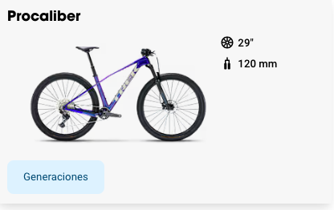

Gama de entradaMTB 29” Alubike / Trek / Giant
Uso recreativo · XC ligero
Cuadro de aluminio, frenos de disco mecánicos, transmisión Shimano de 8-9 velocidades. Pensada para quienes quieren iniciarse en el MTB siguiendo el estilo de bicis como Trek Marlin o Giant Talon.
$8,990 – $13,500 MXN según modelo y marca